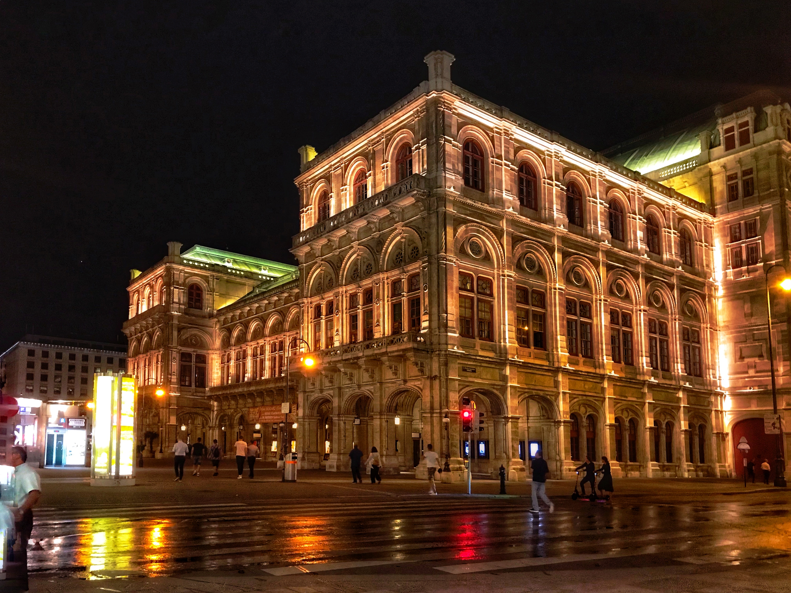
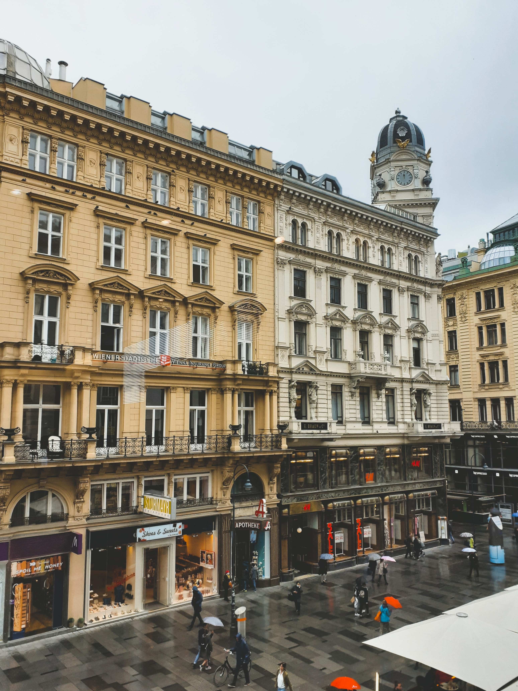
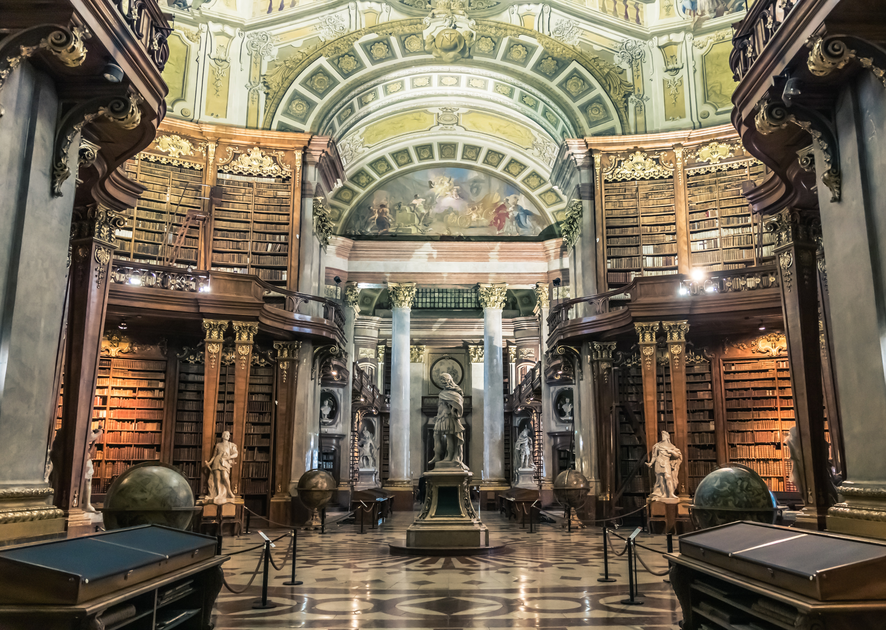

| Imagen |
Nombre del lugar |
Descripción |
Localización |
Precio |
Sitio Web |
|
Palacio Imperial de Hofburg |
Es el Palacio más grande de la ciudad de Vinea, fue la residencia de la mayor parte de la realeza austriaca, especialmente de la dinastía de los Habsburgo y de los emperadores de Austria y de Austria-Hungría. En la actualidad es la residencia del presidente de la República de Autria. Este palacio además alberga el museo de Sissi y los salones imperiales. Su estilo arquitectónico va del gótico al historicismo, de moda en el siglo XIX, todos ellos repartidos entre la docena de edificios que lo componen. Cuenta con 2600 estancias repartidas en las 18 alas. |
|
15€ Adultos, 9€ Niños |
Página Web Oficial |
 |
Catedral de San Esteban |
Es la iglesia de los archidiócesis de Viena y la sede de su arzobispo. Situada en la plaza de San Esteban, en el pleno centro de la capital. La obra fue iniciada por Rodolfo IV de Austria y se levanta sobre las ruinas de dos iglesias, siendo una de ellas una parroquia consagrada en 1147. Este edificio experimentó tambien varias reformas y aplicaciones a lo largo de su historia, siguiendo así los distintos estilos arquitectónicos de las épocas como el románico tardío y ampliaciones tanto góticas como barrocas. Es un importante símbolo religioso y ha sido testigo de multitud de eventos importantes de la historia Austriaca. |
|
4,50€ Adultos, 2€ Niños 14-18 años, 1,50€ Niños 6-14 años |
Página Web Oficial |
|  |
Ópera Estatal de Viena |
Ubicada en el centro de la ciudad, es una de las compañías más importantes de la ópera mundial. Hasta el año 1920 se conocía como "Teatro de Ópera de la Corte Imperial y Real de Viena", además fue el primer edifico más importante de la Viena Ringstrasse comisionado por el vienés "fondo de expansión de la ciudad". Este edificio es el centro neurálgico de la vida musical vienesa y uno de los polos de atracción del mundo musical. De estilo neorrenacentista, es una de las joyas de la arquitectura vienesa. |
|
7,50€ Adultos, 6€ Adultos de la Tercera Edad, 3,50€ Estudiantes |
Página Web Oficial |
|
Ayuntamiento de Viena |
Ubicado en el distrito de Innere Stadt de la capital de Austria, en frente de un parque llamado Rathauspark. Es un edificio de estilo neogótico, diseñado por Friedrich von Schimidt y contruído entre los años 1872 y 1883. En lo alto de la torre principal, se encuntra el Rathausmann, una escultura dorada de 3,5 metro de altura que representa la figura de un portaestandarte y hasta la actualidad se ha convertido en un símbolo de Viena. |
|
Entrada gratuíca con tour. |
Página Web Oficial |
|
Iglesia de San Carlos Borromeo |
Situada en Kreuzherrengasse, 1, al sur de Karlsplatz, al brode el primer distrito. Esta iglesia es un símbolo de poder religioso y político de la dinastia imperial de los Habsurgo. Esta iglesia constituye una obra maestra del eclecticismo barroco, donde se combinan diferentes estilos, ya que la fachada central representa un pórtico gótico, las columnas situadas en los laterales inspiradas en el estilo Barroco y situada en la entrada, una gigantesca cúpula. Los dos pabellones laterales de esta, muestan las influencias del barroco romano y la decoración oriental, con una altura de 80 metros y un ancho de 60, es el segundo templo más amplio de la capital, después de la Catedral de San Esteban. |
|
6€ Adultos, 4€ Estudiantes |
Página Web Oficial |
|
Escuela Española de Equitación |
Es una de las instituciones más destacadas de Viena, fundada en el 1572, caracterizada por sus cuadras de estilo barroco son una de las mejores istalaciones para caballos del mundo. Dedicada a la equitación y basada en la doma clásica teniendo como referente s dos aspectos básicos de esta: el caballo de raza lipizzana y la tenica tradicional empleada para la doma española. Es uno de los símbolos de la ciudad y de Austria, hasta el punto de elegirse como imagen para el billete de cinco euros, representando la presencia de Austria en la UE. Es un referente para el turismo vienés y declarada como patrimonio Cultural Inmaterial de la Humanidad por la UNESCO en 2015. |
|
18€ Adultos, 9€ Estudiantes |
Página Web Oficial |
|  |
Graben |
Es una de las calles más importantes del centro de la ciudad de Viena. Esta calle comienza en Stock-im-Eisen-Platz, junto al Palais Equitable, y acaba en la intersección de Kohlmarkt y Tuchlauben. Además, esta calle alberga algunos de los edificios más famosos como, el edificio de Freisingerhof y Trattnerhof actualmente un edificio de oficinas, Ankerhaus llamado así porque fue comprado por la aseguradora Der Anker, el Palais Bartootti-Partenfeld, Generalihof, Grabenhof y Erste Österreichische Spar-Kasse; y ademas estructuras como la famosa Pestsäule, construida por el Emperador Leopolsdo I tras la Gran Peste de Viena y dos fuentes situadas una a cada extremos de la plaza utilizadas antiguamente para apagar incendios. |
|
- |
- |
|
Museo de Historia Natural de Viena |
Es el único museo de este estilo que se encuentra en Austria. Las colecciones que posee se exponen en una superficie de 8.700 metros cuadrados, siendo las primeras de hace más de 250 años, llegando a tener en el 2011 aproximadamente 30 millones de objetos y creciendo hasta el día de hoy. Los campos de investigación de este van desde los orígenes del Sistema Solar y la evoluciñon de los animales y las plantas a la evolución humana, así como tradiciones y costrumbres prehistóricas. Este edicio de estilo renacentista construído entre el 1872 y el 1892, esta situado en la plaza de María Teresa, en frente de su "gemelo" el Museo de Historia de Arte. Además, la interacción del edificio, su ornamentada decoración, el mobiliario y las preciosas piezas exhibidas hacen que el museo en sí mismo sea un artefacto de valor histórico. |
|
10€ Adultos, 8€ Adultos de la Tercera Edad, 5€ Estudiantes menores de 27 años |
Página Web Oficial |
|
Museo de Historia del Arte de Viena |
Es uno de los primeros museos de bellas artes y artes decorativas del mundo. Se inauguró al mismo tiempo que su "gemelo" el Museo de Historia Natural, en el año 1891 por el emperador Francisco José I de Austria-Hungría. Entorno a las tres plantas, el museo alberga una variada colección de arqueología, escultura, artes aplicadas, armas, numismática y medallistica, donde las galerías de pintura se encuentran en la planta noble y segunda, mientras que el último está dedicado a mestros menores. Este edificio de estilo renacentista fue construído entre el 1872 y el 1892, está situado en la plaza de María Teresa, en frente del Museo de Historia Natural. Tiene una fachada caraterística de piedra arenisca, con una planta rectangular acabado en una cúpula de 60 metros de alto y coronado con una estuatua colosal de Palas Atenea y con un interior lujosamente decorado de marmol, ornamentación de estuco, pan de oro y pinturas haciendo de este una verdadera obra de arte. |
|
16€ Adultos, 20€ combinada con Tesoros de Habsburgo. |
Página Web Oficial |
|  |
Biblioteca Nacional de Austria |
Posee casi 8 millones de documentos, heredados de la antigua Biblioteca Imperial de los Habsburgo. Adquirió su nombre actual en 1920, tras el fin del Imperio. Esta situada en el Hofburg de Viena y alguno de sus fondos en el Palacio Mollard-Clary. Contiene valiosos fondos, así como manuscritos, papiros, incunables, libros antiguos, mapas, partituras musicales, autógrafos, grabados, esperas y globos terraqueos y clestes... Además, recoge una gran riqueza acumulada por la casa de los Habsburgo desde los tiempos medievales si bien la Biblioteca Imperial, antecedente directa de la actual empezó a funcionar desde el siglo XVI, bajo Maximiliano II. Cuenta asimismo con una importante colección de libros en y sobre el esperanto y otras lenguas artificiales. Dentro de la institución hay un museo sobre papiros, otro sobre globos terráqueos, y un tercero sobre el esperanto. El edificio barroco fue diseñado por Johann Bernhard Fischer von Erlach y levantado entre 1723 y 1726 bajo la dirección de su hijo Joseph Emanuel Fischer von Erlach. |
|
8€ Adultos, 6€ Estudiantes |
Página Web Oficial |
|
Iglesia Votiva |
Su nombre original es Iglesia Votiva del Divino Salvador, es un templo de culto católico situado en Viena, Austria. Está considerada, por sus dimensiones, unidad de estilo y belleza, una de las iglesias más notables del siglo XIX.Fue mandada construir por Maximiliano de Habsburgo Emperador de México y hermano del emperador de Austria Francisco José I, tras haber sobrevivido este último a un ataque que pudo ser mortal en el año 1853, como voto y ofrenda a Dios y acción de gracias. Tras el atentado, se organizó una colecta popular y se encargaron los planos al arquitecto Heinrich von Ferstel, quien la diseñó en estilo Neogótico, tomando como inspiración la catedral de Colonia. Su construcción comenzó en 1853, y se terminó en 1879. Fue inaugurada solemnemente el 24 de abril de 1879, en ocasión del Jubileo de Plata de los emperadores. Sufrió numerosos daños durante la Primera y Segunda Guerra Mundial, teniendo que ser reparada varias veces. La idea original, además de la iglesia, incluía un mausoleo de los austriacos ilustres, pero tal proyecto no llegaría nunca a materializarse. |
|
Gratuíto, 3,90€ Visita al Museo |
Página Web Oficial |